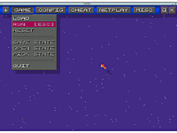

ZSNES
Dieser Artikel wurde für die folgenden Ubuntu-Versionen getestet:
Ubuntu 16.04 Xenial Xerus
Zum Verständnis dieses Artikels sind folgende Seiten hilfreich:
ZSNES  ist ein Emulator für das Super Nintendo Entertainment System, kurz SNES. Die Kompatibilität zu den Spielen ist hoch und es stehen sehr viele Einstellungsmöglichkeiten zur Verfügung. Besonders interessant ist ZSNES für ältere Rechner, da der Emulator dank seiner Programmierung in Assembler auch auf Prozessoren mit weniger als 1 GHz Taktrate schnell läuft.
ist ein Emulator für das Super Nintendo Entertainment System, kurz SNES. Die Kompatibilität zu den Spielen ist hoch und es stehen sehr viele Einstellungsmöglichkeiten zur Verfügung. Besonders interessant ist ZSNES für ältere Rechner, da der Emulator dank seiner Programmierung in Assembler auch auf Prozessoren mit weniger als 1 GHz Taktrate schnell läuft.
Leider ruht die Entwicklung seit 2007.
|  |
| ZSNES |
Installation¶
Zur Installation [1] ist das folgende Paket notwendig:
zsnes (universe, nur für die 32bit-Architektur verfügbar: 184255 )
 mit apturl
mit apturl
Paketliste zum Kopieren:
sudo apt-get install zsnes
sudo aptitude install zsnes
Hinweis:
Da ZSNES niemals auf die 64-Bit-Architektur portiert worden ist, findet man es auch nicht in den Paketquellen eines entsprechenden Ubuntu-Systems. Ab Ubuntu 12.04 findet sich bsnes (ab Ubuntu 14.04 umbenannt in "higan") für beide Architekturen in den Quellen, welcher zwar die beste Kompatibilität bietet, aber auch sehr hohe Ansprüche an den Prozessor stellt.
Danach lässt sich der Emulator unter "Spiele -> ZSNES" starten. Bei Problemen beim Starten siehe Problembehandlung.
Einrichten von ZSNES¶
Nach dem ersten Start empfiehlt es sich, die Grafik anzupassen. Hierzu öffnet man unter "Config" den Menüpunkt "Video". Unter "Modes" lässt sich nur die gewünschte Auflösung einstellen. Im Reiter "Filters" kann man die gewünschten Filter einstellen. Empfehlenswert sind die Filter "Bilinear Filter" und "HQ Filter", da sich hiermit die besten Ergebnisse erzielen lassen.
Unter "Input" lässt sich die Tastaturbelegung anpassen. "Devices" dient zur Einstellung der angeschlossenen Eingabegeräte (z. B. ein Gamepad). Unter "Sound" lassen sich Details zur Audioausgabe einstellen.
Alle anderen Punkte können auf den Standardwerten belassen werden. Erwähnenswert ist noch der Punkt "Speed", hier kann man die Geschwindigkeit des Spiels einstellen, entweder schneller oder langsamer.
Ein Spiel öffnen¶
Um nun ein Spiel in ZSNES spielen zu können, benötigt man eine sogenannte "ROM".
Die Rom öffnet man nun über "Game -> Load". Das Fenster zum Öffnen ist selbsterklärend, ".." bedeutet eine Ebene höher.
Speichern / Laden¶
Den aktuellen Spielstand kann man unter "Save State" speichern und unter "Load State" wieder laden. Unter "Pick State" lässt sich ein Speicherpunkt auswählen. Es ist aber auch möglich, die Speicherfunktionen des Spiels zu nutzen.
Cheats¶
Dieser Menüpunkt dient zum Hinzufügen und Verwalten von Cheat Codes. Als Code gelten hier die "Action Replay Codes" oder ähnliche, je nachdem, welche es für das Spiel gibt. Hinzufügen kann man sie unter "Add Code". Die Codes sind unter "Enter Code" ohne Leerzeichen einzugeben. Unter "Description" kann man zusätzlich eine Beschreibung eingeben. Ein Klick auf "Save" speichert die Codes. Mit "Load" lassen sich die Codes dann wieder laden. Somit braucht man sie nicht bei jedem neuen Start neu einzugeben.
Problembehandlung¶
Fehlermeldungen beim Zugriff auf /dev/input/eventX¶
Es kann vorkommen, dass Fehlermeldungen wie diese erscheinen:
"Unable to poll /dev/input/event1. Make sure you have read permissions to it." "Unable to poll /dev/input/event0. Make sure you have read permissions to it."
Um ZSNES starten zu können, ist es nötig, das Verzeichnis /dev/input/event0 bzw. /dev/input/event1 lesbar zu machen:
sudo chmod +r /dev/input/event0
Dieses muss mit allen angegebenen Verzeichnissen gemacht werden. Anschließend kann ZSNES gestartet werden.
Gamepad aktivieren¶
Um ein Gamepad dauerhaft zu aktivieren, mit einem Editor [3] im Homeverzeichnis die versteckte Datei ~/.znes/zsnesl.cfg bearbeiten. Hier den Eintrag
libAoDriver=“auto“
in
libAoDriver=“sdl“
ändern.
Kein Sound¶
Eine Möglichkeit(!), um den Sound zu aktivieren. Mit einem Editor [3] im Homeverzeichnis die versteckte Datei ~/.znes/zsnesl.cfg bearbeiten. Hier den Eintrag (unter SOUND):
libAoDriver=“auto“
in
libAoDriver=“sdl“
ändern.
Fehler im Sound¶
Wenn man Probleme mit Verzögerungen im Sound hat, hilft es ggf., in ZSNES unter "Config -> Sound" die Sampling Rate auf 8000 Hz herunter zu regeln. Alternativ das Programm mit dem Befehl [3]
zsnes -ad sdl
starten.
Blinkende Sprites¶
Dies kann man entfernen indem man in dem Menü auf "Config" klickt. Und dann dort die neue GFX Engine deaktiviert und die alte Aktiviert.
Netplay (Mehrspielermodus) ist nicht anwählbar¶
Ab der Version 1.50 begannen die Entwickler damit, den chaotischen Quelltext von ZSNES aufzuräumen. Die Netplay-Funktion fiel hier zum Opfer, da sie besonders schlecht geschrieben war. Um trotzdem noch über das Internet spielen zu können, half es anfangs, die Version 1.42 manuell zu kompilieren. Dies ist jedoch unter halbwegs modernen Ubuntu-Ausgaben kaum mehr möglich, da ZSNES völlig veraltete Programmbibliotheken benötigt.
Eine unelegante, wenn auch simple Möglichkeit, eine alte Version zum laufen zu bringen, ist das Ausführen der kompilierten Windows-Versionen unter Wine.
ZSNES stürzt beim Laden einer ROM ab¶
Hier kann es hilfreich sein, ZSNES über ein Terminal ohne grafische Benutzeroberfläche mit der Angabe der zu benutzenden ROM zu starten. Der passende Befehl hierfür lautet:
zsnes -m /pfad/zur/ROM.smc
- Erstellt mit Inyoka
-
 2004 – 2017 ubuntuusers.de • Einige Rechte vorbehalten
2004 – 2017 ubuntuusers.de • Einige Rechte vorbehalten
Lizenz • Kontakt • Datenschutz • Impressum • Serverstatus -
Serverhousing gespendet von